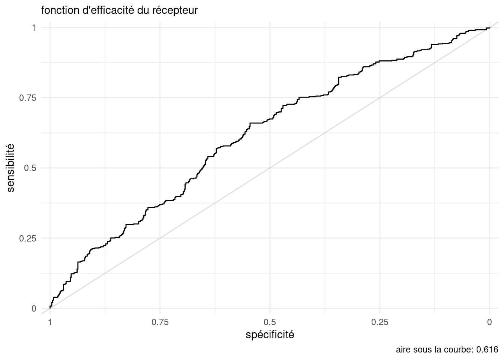

La cote pour l’offre promotionnelle (oui versus non) des hommes est 23.5% plus faible que celle des femmes, ceteris paribus
La cote des clients occasionnels est 7.11% supérieure à celle des clients fréquents, ceteris paribus. De manière équivalente, le rapport de cotes pour tclient fréquent sur occasionnel est de1/1.0711 = 0.934: les clients fréquents ont une cote 6.6% inférieure à celle des clients occasionnels, toute chose étant égale par ailleurs.
La cote de nachats augmente de 23.1% pour chaque augmentation du nombre d’achats dans le dernier mois, ceteris paribus
Testez si l’effet de nachats est statistiquement significatif à niveau \(\alpha = 0.05\).
L’intervalle de confiance à 95% pour le rapport de cote de nachats, basé sur la vraisemblance profilée, est de \([1.15, 1.32]\); comme 1 est exclu, cette différence est statistiquement significative.
On obtiendrait la même conclusion avec la statistique du test de rapport de vraisemblance, ici \(37.237\) pour 1 degré de liberté. La probabilité, si \(\beta_{\text{nachats}}=0\), d’obtenir une telle différence d’ajustement est inférieure à \(10^{-4}\), bien en deça du seuil de significativité. On rejette l’hypothèse nulle et on conclut que le nombre d’achat est important pour expliquer si une personne s’est prévalue de l’offre promotionnelle.
Choisissez un point de coupure pour la classification pour maximiser le taux de bonne classification.
Pour le point de coupure choisi, construisez une matrice de confusion.
Calculez la sensibilité, la spécificité et le taux de bonne classification manuellement. Vérifiez vos réponses avec la sortie du tableau.
Code
set.seed(60602)# Prédictions par validation croisée # (moyenne de 10 réplications, K=10 plis)pred <- hecmulti::predvc(mod)# Extraire la variable réponse binaire 0/1resp <- logistclient$promo
Notez que les prédictions obtenues par validation croisée sont aléatoires, donc les résultats (aire sous la courbe, valeur-\(p\) du test d’adéquation, etc.) peuvent varier si vous n’utilisez pas le même germe aléatoire.
On prend le modèle ajusté avec glm et on calcule la prédiction à l’aide de la validation croisée à 10 groupes, répétée 10 fois. La fonction predvc retourne la moyenne des prédictions (ici, des probabilités) pour chacune des 1000 observations.
Code
library(ggplot2)tableau <-perfo_logistique(prob = pred, resp = resp)# Graphique du taux de bonne classification# selon le point de coupureggplot(data = tableau, aes(x = coupe, y = pcorrect)) +geom_line() +theme_classic() +scale_y_continuous(limits =c(0, 100),expand =c(0,0)) +labs(x ="point de coupure",y ="",subtitle ="Taux de bonne classification")
Ensuite, il suffit de passer les valeurs de la variable réponse et nos probabilités de succès prédites aux différentes fonctions.
Si on considère des points de coupure de 0.01 à 0.99 en incréments de 0.01, on obtient un point de coupure optimal à 0.45. On note que le taux de bonne classification change assez peu au final.
Tableau 1: Matrice de confusion avec point de coupure optimal
\(Y=1\)
\(Y=0\)
\(\widehat{Y}=1\)
316
240
\(\widehat{Y}=0\)
163
281
Ainsi, si on fait les calculs à la main, on estime
la spécificité \(\mathsf{VN}/(\mathsf{VN} + \mathsf{FN})\), soit 281 / (281 + 163) ou 0.633.
la sensibilité \(\mathsf{VP}/(\mathsf{VP} + \mathsf{FP})\), soit 316 / (316 + 240) ou 0.568.
le taux de bonne classification \(\mathsf{VN} + \mathsf{VP}/(\mathsf{VN} + \mathsf{VP} + \mathsf{FN} + \mathsf{FP})\), soit (316 + 281) / 1000 ou 0.597.
Ces valeurs coincident, à arrondi près, avec ce qui est reporté dans le tableau.
Produisez un graphique de la fonction d’efficacité du récepteur (courbe ROC) et rapportez l’aire sous la courbe estimée à l’aide de la validation croisée.
Code
roc <-courbe_roc(prob = pred, resp = resp)

On obtient une estimation de l’aire sous la courbe de 0.616.
Calculez la statistique de Spiegelhalter (1986) pour la calibration du modèle. Y a-t-il des preuves de surajustement?
Code
hecmulti::calibration(prob = pred, resp = resp)
Test de calibration de Spiegelhalter (1986)
Statistique de test: 0.55
valeur-p: 0.581
L’hypothèse nulle est que le modèle est calibré; ici, la valeur-\(p\) est près de 0.5, donc on ne rejette pas l’hypothèse nulle et on conclut qu’il n’y a pas de preuve de surajustement.
Exercice 4.2
On s’intéresse à la satisfaction de clients par rapport à un produit. Cette dernière est mesurée à l’aide d’une échelle de Likert, allant de très insatisfait (1) à très satisfait (5). Les 1000 observations se trouvent dans la base de données multinom du paquet hecmulti.
Modélisez la satisfaction des clients en fonction de l’âge, du niveau d’éducation, du sexe et du niveau de revenu.
Est-ce que le modèle de régression multinomiale ordinale à cote proportionnelles est une simplification adéquate du modèle de régression multinomiale logistique? Si oui, utilisez ce modèle pour la suite. Sinon, ajustez le modèle de régression multinomiale logistique avec 1 comme catégorie de référence, 1 pour revenu et sec pour éducation1 et utilisez ce dernier pour répondre aux autres questions.
Les niveaux des facteurs non-ordonnés (catégories) dans R sont classés en ordre alphanumérique. Il faut donc modifier la catégorie de référence uniquement pour le niveau d’éducation avant d’ajuster le modèle.
Le modèle a 4 coefficients, dont deux pour éducation et revenu et un pour sexe et age, par niveau.
Pour ajuster le modèle à cotes proportionnelles, il faut d’abord convertir la variable réponse en variable ordinale à l’aide de ordered si ce n’est pas déjà la classe de la variable. Cela permettra de spécifier l’ordre des modalités.
Code
# Ajuster modèle à cote proportionnellemod0 <- MASS::polr(ordered(y) ~ sexe + educ + revenu + age,data = db)# Calculer statistique de test# (rapport de vraisemblance)stat <-deviance(mod0) -deviance(mod1)# À comparer à une loi khi-deux avec # npar1-npar0 degrés de liberténpar0 <-length(coef(mod0)) +length(mod0$zeta)npar1 <-length(coef(mod1))# Calcul de la valeur-p# Probabilité que khi-deux (df) excède 'stat'pchisq(stat, df = npar1 - npar0, lower.tail =FALSE)
[1] 0.0008817018
Le modèle ordinal a 10 paramètres, contre 28 pour le modèle multinomial logistique. On peut faire un test du rapport de vraisemblance en comparant la différence des log-vraisemblance des deux modèles emboîtés: la valeur de la statistique est 42.702. La valeur-\(p\) estimée est \(8.8 \times 10^{-4}\)$, donc on rejette l’hypothèse nulle et on conclut que le modèle à cote proportionnelle n’est pas adéquat.
Interprétez l’effet des variables éducation et sexe pour la catégorie 2 (par rapport à 1).
Il suffit de regarder les coefficients \(\exp(\widehat{\beta}_{\text{sexe}}), \ldots\) associés et les interpréter en termes de rapport de cote, pour une régression logistique ordinaire.
Code
# Coefficient correspondants à sexe et éducationexp(coef(mod1)["2", 2:4])
sexe educcegep educuni
1.424053 1.104006 1.316095
La cote pour les femmes pour insatisfait par rapport à très insatisfait est 42.4% plus élevée que pour les hommes, toute chose étant égale par ailleurs.
La cote pour les individus qui ont un diplôme collégial pour insatisfait par rapport à très insatisfait est 10.4% plus élevée que pour ceux qui on un diplôme secondaire, toute chose étant égale par ailleurs.
La cote pour les individus qui ont un diplôme universitaire pour insatisfait par rapport à très insatisfait est 31.6% plus élevée que pour ceux qui on un diplôme secondaire, toute chose étant égale par ailleurs.
Est-ce que le modèle avec une probabilité constante pour chaque item est adéquat lorsque comparé au modèle qui inclut toutes les covariables?
Pour répondre à cette question, on ajuste le modèle multinomial logistique avec uniquement une constante. Les probabilités prédites sont simplement la proportion empirique des observations de l’échantillon: on peut ainsi vérifier que le modèle a convergé en comparant les prédictions et ces proportions. Une petite différence numérique est possible puisque le modèle multinomial logistique est ajusté à l’aide d’une procédure d’optimisation numérique itérative.
Code
# Ajuster modèle avec proba constantemod0 <- nnet::multinom( y ~1, # ordonnée à l'origine seulementdata = db,trace =FALSE)# Vérifier convergencepred0 <-predict(object = mod0,# Entrer une bd avec une lignenewdata = db[1,], type ="prob")# Calculer la proportion de chaque categ.proportions_y <-table(db$y)/nrow(db)# Calculer différencespred0 - proportions_y
On peut ensuite calculer la statistique de rapport de vraisemblance en comparant les déviances des deux modèles.
Code
# Calculer statistique de test# (rapport de vraisemblance)stat <-deviance(mod0) -deviance(mod1)# À comparer à une loi khi-deux avec # npar1-npar0 degrés de liberténpar0 <-length(coef(mod0)) +length(mod0$zeta)npar1 <-length(coef(mod1))# Calcul de la valeur-p# Probabilité que khi-deux (df) excède 'stat'pchisq(stat, df = npar1 - npar0, lower.tail =FALSE)
[1] 0.0002755707
La statistique pour le test du rapport de vraisemblance que tous les coefficients associés aux covariables sont nuls (24 paramètres supplémentaires) est 55.41, et si le modèle sans covariable était vrai, cette statistique serait approximativement \(\chi^2_{24}\). La valeur-\(p\) arrondie est 0.0003, on rejette l’hypothèse nulle que tous les coefficients associés aux variables explicatives sont nuls. On conclut qu’au moins une covariable est utile pour prédire une cote par rapport au modèle avec une probabilité constante.
Est-ce que l’effet de la variable âge est globalement significatif?
Puisqu’on modélise quatre rapport de cotes à l’aide d’un modèle logistique, d’où \(\beta_{\texttt{age}_2}=\beta_{\texttt{age}_3}=\beta_{\texttt{age}_4}=\beta_{\texttt{age}_5}=0.\) On peut obtenir la valeur-\(p\) avec le tableau d’analyse de déviance, qui rapporte la valeur du test de rapport de vraisemblance. On conclut que l’âge impacte la probabilité des différents items de satisfaction.
Code
car::Anova(mod1, type =3)
Analysis of Deviance Table (Type III tests)
Response: y
LR Chisq Df Pr(>Chisq)
sexe 14.6448 4 0.0054975 **
educ 9.7083 8 0.2860960
revenu 7.8239 8 0.4508547
age 23.1285 4 0.0001194 ***
---
Signif. codes: 0 '***' 0.001 '**' 0.01 '*' 0.05 '.' 0.1 ' ' 1
Fournissez un intervalle de confiance à niveau 95% pour l’effet multiplicatif d’une augmentation d’une unité de la variable âge pour chacune des cote par rapport à très insatisfait (1). Que concluez-vous sur l’effet de âge pour les réponses 2 à 5 par rapport à 1?
Les intervalles de confiance sont obtenus en prenant l’exponentielle des intervalles de confiance profilée pour les coefficients associés à age:
Prédisez la probabilité qu’un homme de 30 ans qui a un diplôme collégial et qui fait partie de la classe moyenne sélectionne une catégorie donnée. Quelle modalité est la plus susceptible?
Code
# Profil du clientprofil <-data.frame(sexe =0, age =30, educ ="cegep", revenu ="2")# Probabilité du score de satisficationpredict(mod1, newdata = profil, type ="prob")